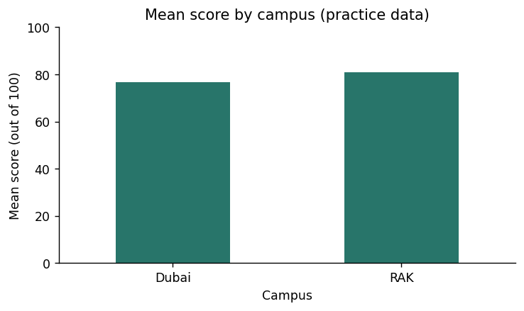
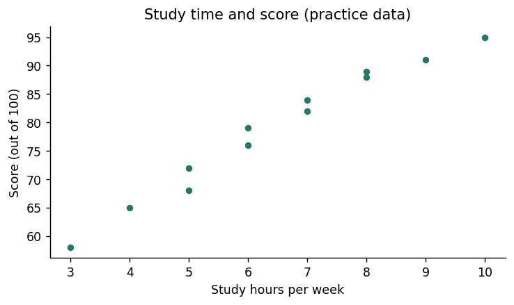

Each run starts with fresh data. Download any exported files before another run. Your written answers and code drafts are saved on this device; export your work to keep a backup.
M24C01 · Explore · predict · practice
Compare groups with bars
A bar chart compares categories. First calculate one statistic per group, then plot those values. The axis label must say whether the height is a mean, count, or total.
Read the example
df = students()
result = df.groupby("Campus")["Score"].mean().sort_index()
ax = result.plot.bar(color="#28756a", rot=0, figsize=(6, 3.6))
ax.set(title="Mean score by campus (practice data)", xlabel="Campus", ylabel="Mean score (out of 100)", ylim=(0, 100))
plt.tight_layout()
print(result.round(2))
plt.show()
Verified example output · pandas 2.2.3
Campus
Dubai 76.83
RAK 81.00
Name: Score, dtype: float64

Watch for this. Use a zero baseline for ordinary bar comparisons so bar length remains meaningful.
Your turn
Plot the number of students in each Program instead, with a count label on the y-axis.
For the code check, keep these result variable names: result. Different valid approaches are welcome.
Show a hint
Use groupby("Program").size() before plot.bar().
Show one worked solution
df = students()
result = df.groupby("Program").size()
ax = result.plot.bar(color="#28756a", rot=0, figsize=(6, 3.6))
ax.set(title="Students by program (practice data)", xlabel="Program", ylabel="Number of students")
ax.set_ylim(bottom=0)
plt.tight_layout()
print(result)
plt.show()
Both programs have six students, so their bars have the same height.
Compare your explanations
Read. The mean student Score for that campus in the fictional table.
Predict. RAK, with 81.00, compared with Dubai at about 76.83.
Explain. No. These are descriptive summaries from a small fictional dataset, without causal evidence.
One quick check
Why label the y-axis "Mean score"?
What you should be able to explain. Aggregate first, then label exactly what was plotted.
M24C02 · Explore · predict · practice
Inspect a distribution
A histogram counts numeric observations within intervals called bins. It shows the distribution of individual values, rather than a summary for each named category. Bin choices can change the visual impression.
Read the example
df = students()
result = pd.cut(df["Score"], bins=[50, 60, 70, 80, 90, 100], right=False).value_counts(sort=False)
ax = df["Score"].plot.hist(bins=[50, 60, 70, 80, 90, 100], color="#28756a", edgecolor="white", figsize=(6, 3.6))
ax.set(title="Distribution of scores (practice data)", xlabel="Score (out of 100)", ylabel="Number of students")
plt.tight_layout()
print(result)
plt.show()
Watch for this. Histogram libraries usually include the upper endpoint of the last bin; pd.cut(right=False) does not. These sample scores contain no endpoint value of 100.
Your turn
Use wider bins [50, 75, 100] and compare the count table and visual shape.
For the code check, keep these result variable names: result. Different valid approaches are welcome.
Show a hint
Change the bin edges in both pd.cut and plot.hist.
Show one worked solution
df = students()
result = pd.cut(df["Score"], bins=[50, 75, 100], right=False).value_counts(sort=False)
ax = df["Score"].plot.hist(bins=[50, 75, 100], color="#28756a", edgecolor="white", figsize=(6, 3.6))
ax.set(title="Scores with wider bins (practice data)", xlabel="Score (out of 100)", ylabel="Number of students")
plt.tight_layout()
print(result)
plt.show()
The two wider bins contain four scores below 75 and eight scores from 75 up to 100.
Compare your explanations
Read. Students whose scores fall inside each interval.
Predict. 2: 91 and 95.
Explain. A histogram groups numeric values into intervals; campus bars compare named groups.
One quick check
What happens when bin widths change?
What you should be able to explain. Check bin boundaries when interpreting distributions.
M24C03 · Explore · predict · practice
Compare two measurements
A scatter plot places one point at each pair of numeric measurements. This can reveal a pattern, an unusual observation, or a gap. Correlation describes association; it does not establish why the pattern occurs.
Read the example
df = students()
result = df[["Study_Hours", "Score"]].corr().loc["Study_Hours", "Score"]
ax = df.plot.scatter(x="Study_Hours", y="Score", color="#28756a", figsize=(6, 3.6))
ax.set(title="Study time and score (practice data)", xlabel="Study hours per week", ylabel="Score (out of 100)")
plt.tight_layout()
print("Pearson correlation:", round(result, 3))
plt.show()
Verified example output · pandas 2.2.3
Pearson correlation: 0.985

Watch for this. Outliers, restricted ranges, and missing data can affect correlation; inspect the actual points.
Your turn
Plot Attendance against Score and calculate their Pearson correlation.
For the code check, keep these result variable names: result. Different valid approaches are welcome.
Show a hint
Replace Study_Hours with Attendance in both the correlation and plot.
The revised plot compares attendance percentages with scores. Its association still does not establish causation.
Compare your explanations
Read. One student with a Study_Hours value and a Score value.
Predict. Upward in this fictional table: higher study hours generally accompany higher scores.
Explain. No. The table is fictional and descriptive, and the plot does not control other factors.
One quick check
What does a positive correlation indicate?
What you should be able to explain. Use scatter plots to inspect relationships without claiming causes.
M24C04 · Explore · predict · practice
Show change over time
A line chart uses an ordered horizontal axis to show change. Reindexing to a daily grid keeps the missing date visible as a gap. A line across an unobserved day can otherwise suggest continuity that was not measured.
Watch for this. A smooth line does not create new observations; report how any smoothing was calculated.
Your turn
Store the daily counts in daily and the three-day rolling mean in result, requiring three known daily values. Plot daily and result together with labels for both lines.
For the code check, keep these result variable names: result. Different valid approaches are welcome.
Show a hint
Calculate result from daily.rolling(3, min_periods=3).mean(), then plot both Series on the same axes.